Ympäristön pystytys
Ensin asennan MySQL/MariaDB osana XAMPPia ja käynnistän MySQL servicen:
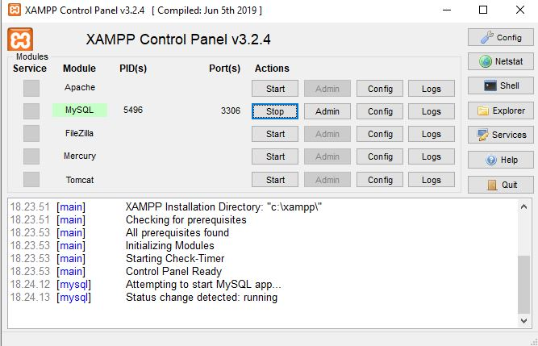
Tämän jälkeen asennan MySQL workbench:
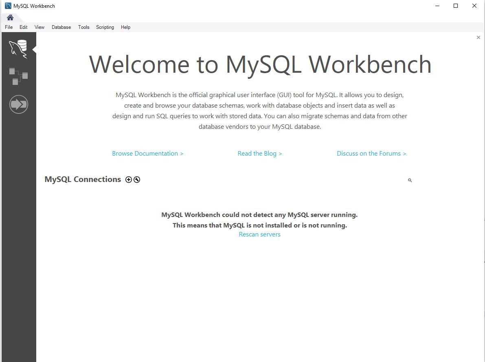
Asennuksen jälkeen luon uuden yhteyhden painamalla pientä + näppäintä. Tähän tulee seuraavat tiedot:
Connection Name: tietokannat_db
Hostname: 127.0.0.1
Port: 3306
Username: root (XAMPPin MySQLin oletuspääkäyttäjä)
Password: [Store in Vault] (Klikkaa tätä ja jätä salasanakenttä tyhjäksi, se on oletusarvo)
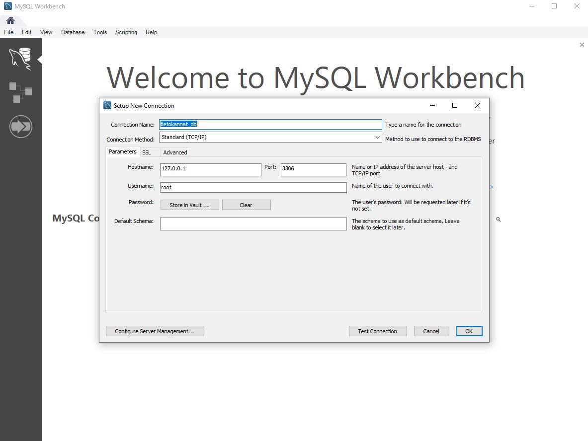
Painan OK ja painan uutta yhteyttä joka on nyt luotu. Uudessa ikkunassa luon uuden databasen klikkaamalla punaisella merkittyä create a new schema -painiketta.
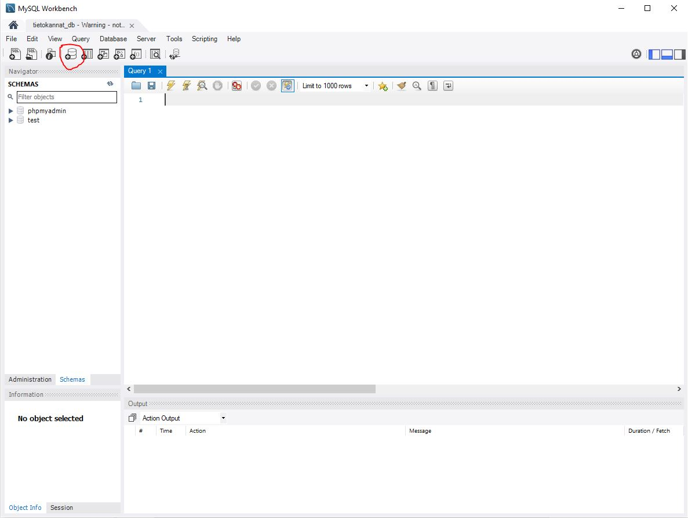
Kirjoitan tietokannan nimeksi student_db ja painan apply/apply/finish
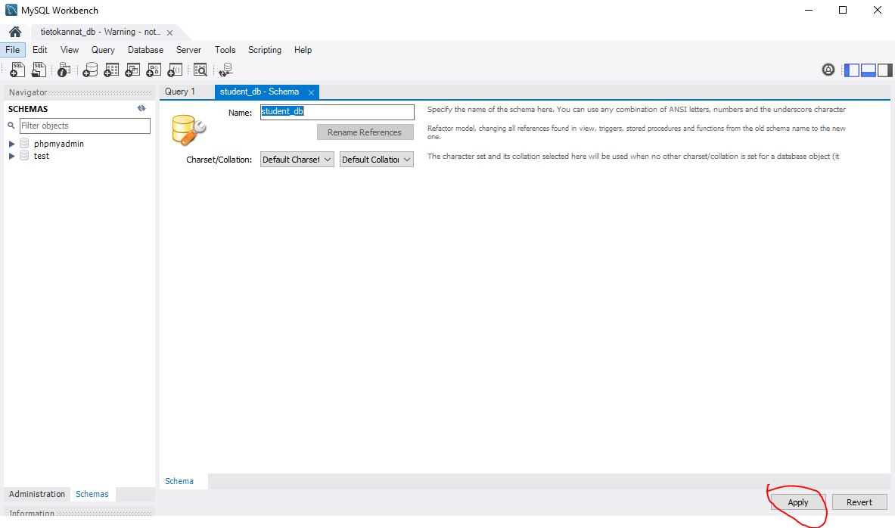
Uusi tietokanta ilmestyi minun navigator-ikkunaan. Valitsen sen minun oletustietokannaksi painamalla hiiren kakkospainiketta ja valitsemalla Set as Default Schema.
Nyt tämä tietokanta on lihavoitu ja kaikki toimintoni (Esim suorittamani SQL-lauseet) kohdistuvat oletusarvoisesti siihen.
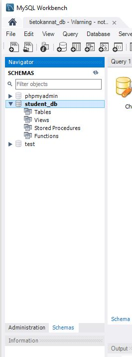
Valitsen painikerivin vasemmanpuoleisen punaisella merkitty Create a new SQL tab for executing queries -painiketta avatakseni SQL-tabin jotta voin suorittaa SQL-lauseita.
Lisään opintojaksolla käytettävän esimerkkitietokannan kopioimalla sen SQL-tabiin ja suorittamalla kaikki SQL-lauseet punaisella merkityllä salama -painikkeella:
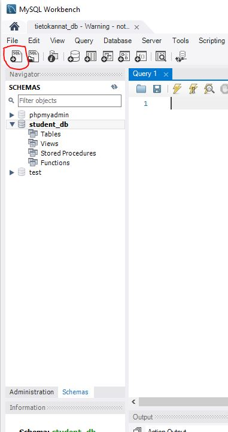
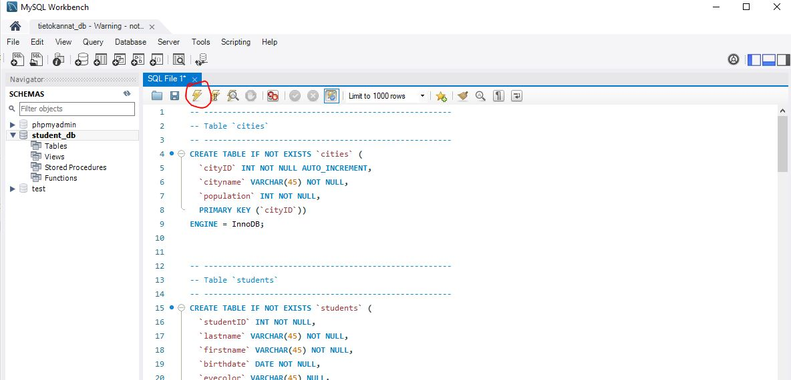
Tämän jälkeen näen, että lauseiden suoritus onnistui:
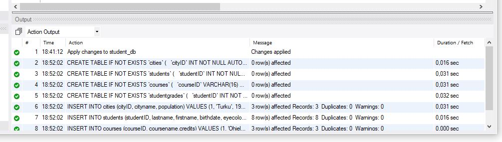
Nähdäkseni lisätyn sisällön valitsen oheisen kuvan mukaisesti esimerkiksi cities -taulu hiiren kakkospainikkeella ja valitsen Select all rows:
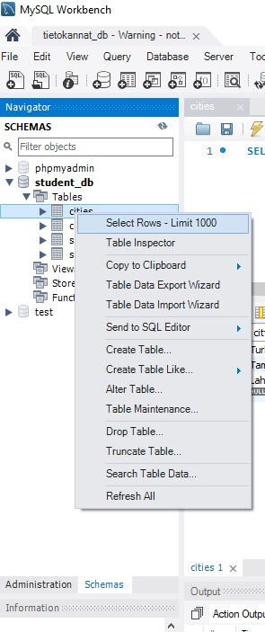
HUOM! Aiheuttamat muutokset eivät aina näy reaaliaikaisesti Worbenchin eri ikkunoissa. Klikkaa haluttua objektia (esim Tables) hiiren kakkospainikkeella ja valitse Refresh All nähdäksesi ajantaisen sisällön.
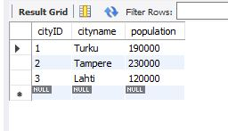
Tästä näen, että olen luonut esimerkkitietokannan onnistuneesti!
SQL-kyselyjen suorittaminen Workbenchissä
Tämä osio ei ole osa harjoitusta, vaan henkilökohtainen muistio liittyen SQL-kyselyjen suorittamiseen. Tehtävä 2 on alempana.
Yleisimminkin SQL-kyselyjä suoritetaan Workbenchissä täsmälleen samoin kuin edellä kohdassa uuden tietokannan luominen.
Kyselyjä suoritetaan seuraavasti:
- Valitse haluamasi tietokanta oletustietokannaksi valitsemalla se hiiren kakkospainikkeella
Set as Default Schema. Tällöin valitsemasi tietokanta näkyy lihavoituna ja kaikki toimintosi (esim. suorittamasi SQL-lauseet) kohdistuvat oletusarvoisesti siihen. - Valitse painikerivin vasemmanpuoleisen ohessa keltaisella merkitty
Create a new SQL tab for executing queries-painike avataksesi SQL-tabin suorittaaksesi SQL-lauseita. - Kirjoita haluamasi SQL-kysely ikkunaan ja klikkaa vihreäksi merkittyä
salama-painiketta suorittaaksesi kyselyn. - Tulokset ilmestyvät ikkunaan alle. Tulosjoukon voit halutessasi tallentaa tekstimuodossa.
Harjoitus 1 - Tehtävä 2
Liityn Labranet:iin VPN -yhteydellä ja luon uuden tietokannan osoitteessa https://mariadb.labranet.jamk.fi/:
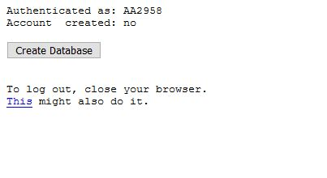
Tämän jälkeen avaan Workbench -ohjelman ja luon uuden yhteyden tähän uuteen tietokantaan. Asetukset ovat:
Connection Name: Labranet_mariadb
Hostname: mariadb.labranet.jamk.fi
Port: 3306
Username: N1234 (Sinun oma opiskelijatunnus)
Password: [Store in Vault] (Klikkaa tätä ja syötä kohdassa 1 generoitu salasana tähän)
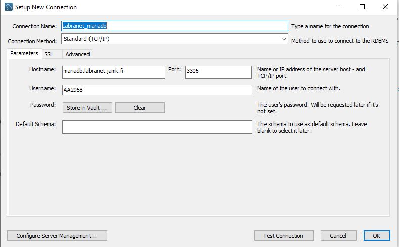
HUOM! Labranetin MariaDB-järjestelmään voit luoda vain neljä ennalta nimeltään ennalta määrättyä tietokantaa. Jos labraverkon käyttäjätunnuksesi on N1234, niin voit luoda ja poistaa seuraavan nimisiä tietokantoja:
N1234
N1234_1
N1234_2
N1234_3
Tässä tapauksessa tietokannan nimeksi tulee AA2958.
Luon uuden esimerkkitietokannan kuten Tehtävä 1:ssä.
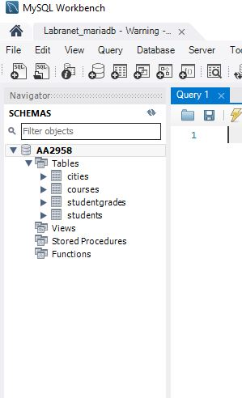
Tämän jälkeen suoritan seuraavat SQL -kyselyt:
SELECT * FROM students;
SELECT * FROM courses;
Tuloksena on:
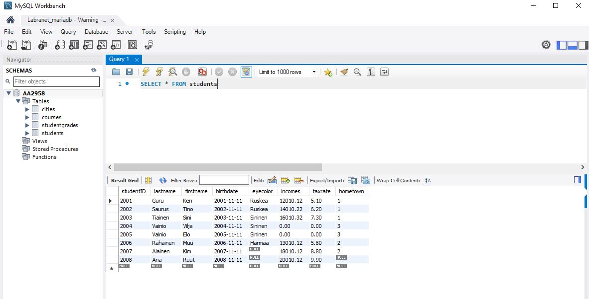
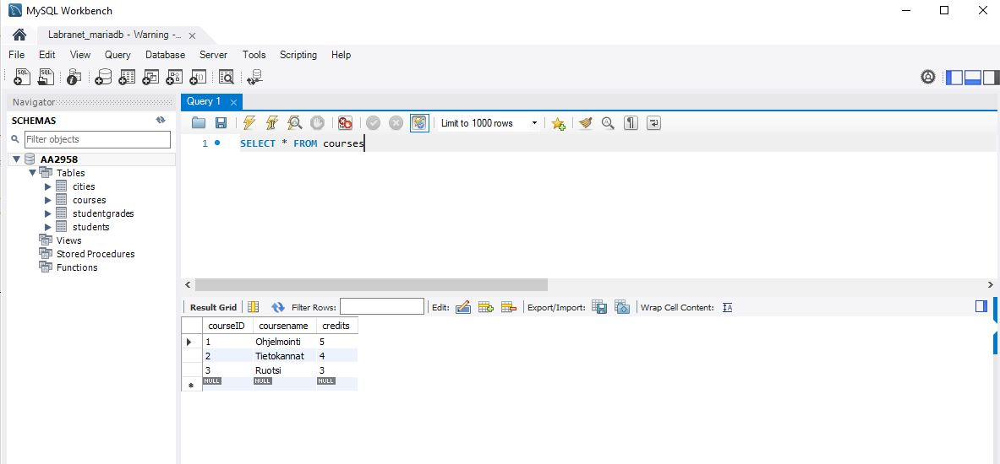
Näyttää siltä, että minun SQL -kyselyni onnistui!